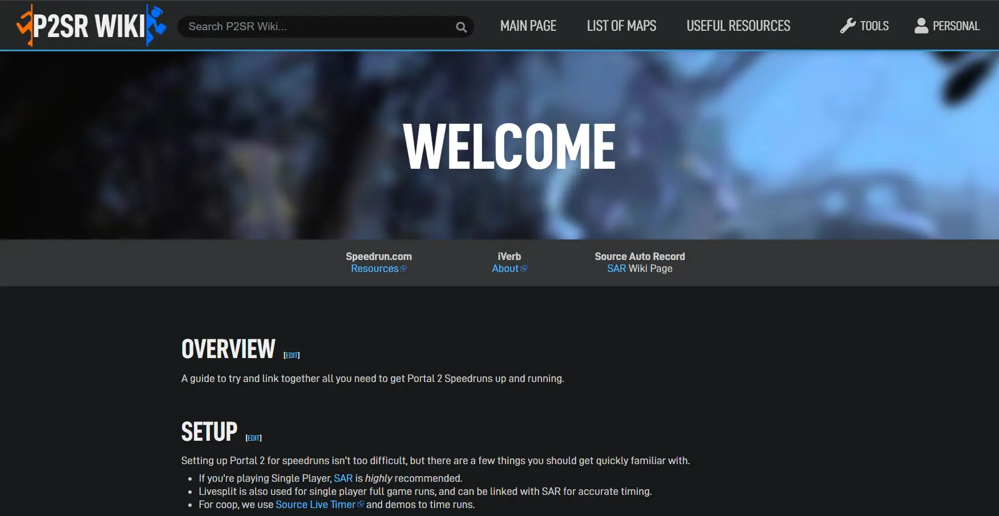
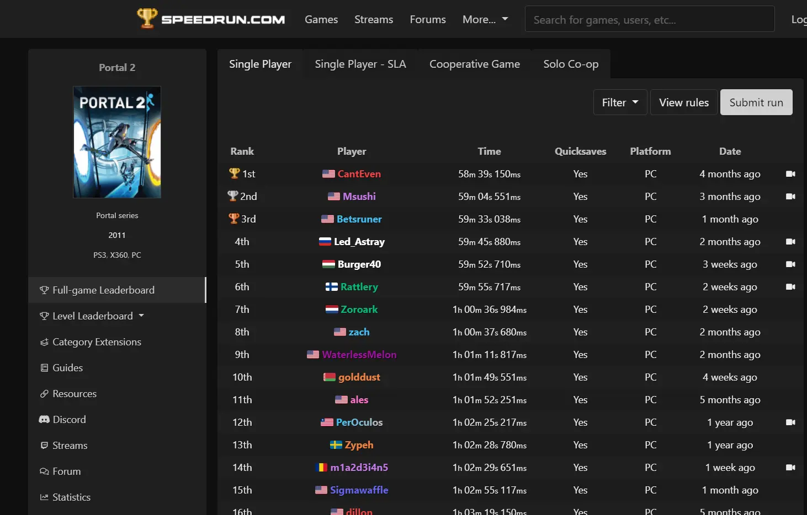
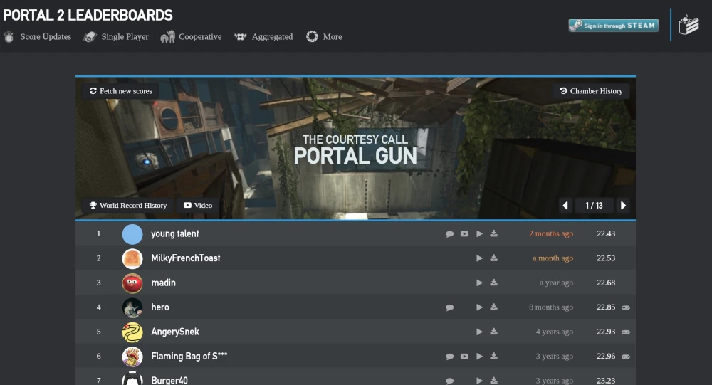
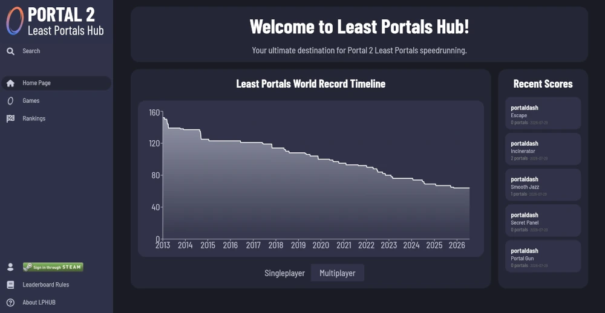
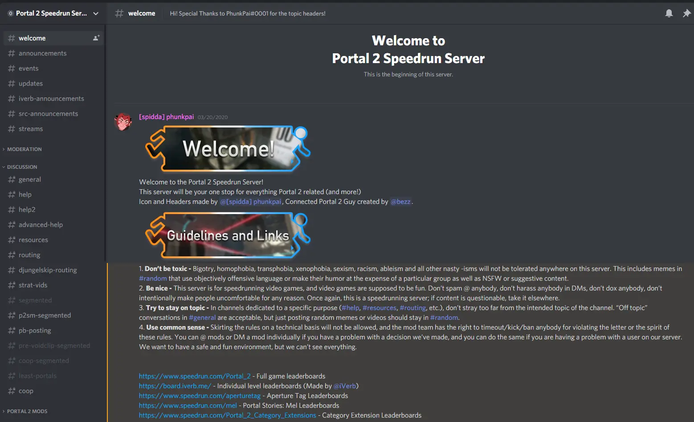
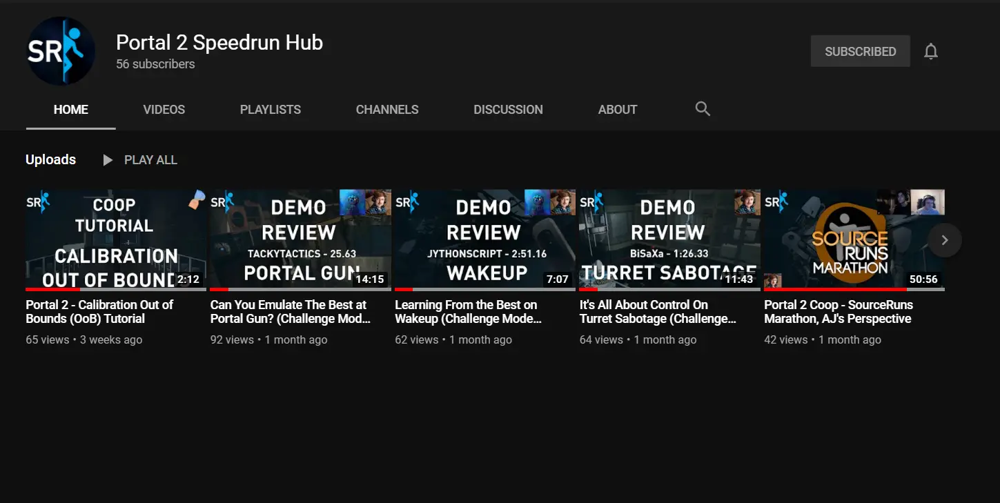

Portal 2 Speedrun Wiki
The best and biggest resource for Portal 2 Speedrunners.
This website was created to gather all information about Portal 2 Speedrunning in the hope that it will become useful for new and old runners.
If you want to learn how to do a specific trick or find out how a certain glitch works, this is the right place to start!

Speedrun.com Leaderboards
The hub for submitting your full game singleplayer and cooperative runs. Includes useful resources for setting up your game and seeing where you stack up against other Portal 2 Speedrunners.

Portal 2 Challenge Mode Leaderboards
Your destination for everything Challenge Mode. The top 200 timed individual level runs for all Portal 2 Single Player and Cooperative maps are hosted here, as well as player profiles and rankings. Sign in with Steam to manage your account!

Portal 2 Least Portals Hub
Your ultimate destination for Portal 2 Least Portals speedrunning. View strategies, upload run demos, and compare your scores with others!
Website provided by BiSaXa.

Portal 2 Speedrun Discord
Meet the community, ask questions, find resources and more. Join the Portal 2 Speedrun Discord server to keep up to date on the latest information in the scene.

Portal 2 Speedrun Hub YouTube
Community hub for tutorials, information, reviews, wiki posts, behind the scenes of big community events and more!